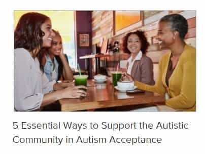
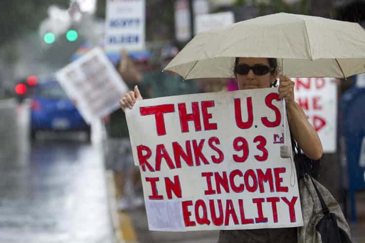

John Carver is a four year ROK veteran with over fifty articles of SJW-triggering truth bombs on archive. You can follow him on Twitter if you are so inclined.


Leftism is not an ideology that works towards achieving ‘300 Spartans’ style six-pack abdominal muscles. Nor is it an ideology that finds having sexually transmitted diseases like chlamydia something to be even slightly ashamed about.
Leftism loves victimhood over accepting any personal responsibility for one’s own misfortunes and pitiful position in life. Frankly, the whole spectrum is designed to just embrace mediocrity, ugliness, ill health, degeneracy, flagrant falsehoods, and poverty for all (but at least they’ll be equal!).
This article will explore twelve reasons why leftism is the preferred pathway to nowhere, and maybe even the eventual collapse of Western civilization.
Australian landwhale Rebel Wilson promoting her “plus size” clothing
Leftism embraces fat acceptance, which encourages people to be proud and comfortable in their abhorrent obesity, rather than emphasizing the importance of a healthy weight for the sake of increased life expectancy, sound mental health, having an agreeable appearance, and success in the dating market.
Leftism embraces cotton candy inspired hair colors, disgusting nose piercings, and degenerate tattoos with gusto. Unfortunately, many of these hive mind leftists are forever coasting in financial purgatory, as their poor choices of “individuality” turn off most lucrative employers and (for women) good husband material.
We’re so happy for their biological dead-end and high risk of AIDS!
Leftism embraces homosexuality and gay marriage like it is the second coming of the messiah. While homosexuals are deserving of life, liberty, and the pursuit of happiness just like everyone else in an enlightened and peace-loving country, their lifestyle should not be flaunted and praised in the public sphere in any manner for the sake of a healthy society.
Extinction of the human race and the proliferation of degenerative venereal diseases would be the only endgame which would result from widespread homosexuality. As for pro child-bearing and AIDS-resistant straight pride, leftists would consider that an act of “hate”.

Leftism embraces various mental illnesses and disorders like Autism, Asperger’s Syndrome, or Depression like they are something to be shared with the whole world, and deserving of some kind of bravery medal.
While private acceptance and seeking help with these disorders is encouraged, they do not need to be flaunted to the entire world like some kind of desirable victimology merit badge. Much like homosexuality, these conditions are detrimental to society at large.
Weeeeee! My Burning Man pinwheel bicycle of “Love” will defeat those terrorist trucks of “Hate”!
Leftism embraces the impotent concepts of “love trumps hate” or “all you need is love”. However, “love” is just simply an emotion-dominated biochemical reaction in the human brain which causes people to make affectionate long-term decisions based upon short-term attractions (often ending in disappointment).
Since leftists are driven more by emotions rather than facts and logic, calling for “love” at the expense of any sound reasoning is a ‘progressive’ duty. Maybe those nearly always Muslim terrorists will just go away if they carry on as usual, change their Facebook avatars, and light candles of love for England and France.
Exactly. It leads to nowhere.
Leftism embraces “awareness” like it is the end-all be-all for any kind of social problem. Think breast cancer awareness, autism awareness, depression awareness, and any other negative phenomena you can think of. But here is the million dollar question that leftist virtue signalling has no answer for. Will all these “awareness” campaigns actually lead to a cure?
Leftism embraces guilt-tripping, browbeating, and demonizing heterosexual white males at seemingly any given opportunity. Rather than trying to emulate the success (or express any sense of gratitude) towards WASP culture, which is responsible for ending slavery, creating 90% of relevant technology and medicine, and maintaining 90% of the world’s most prosperous countries, shaming them into self-loathing is a ‘progressive’ pastime.
What kind of world do they want white men to maintain? Haiti? Saudi Arabia?
(1:39 – C’mon guys you aren’t saying “love” enough. Say it just a few more times!)
Leftism embraces the absurd notion that whenever something doesn’t go their way, like Donald Trump winning the U.S. presidency, then some kind of oppressive white male patriarchy must have been at work. Blacks, Latinos, Asians, Muslims, gays, transgenders, women, immigrants, and disabled people should all now be very afraid, and consider themselves to be under serious “threat” (but from whom and what?).
But don’t worry, for “love trumps hate”. Let love overwhelm them!

Leftism believes that inequality of any kind is an abomination to the ideals of a progressive utopia. Female Starbucks baristas should be getting the exact same paychecks as male vascular surgeons, otherwise everyone is living in a greedy and oppressive capitalist wreck!
However, anyone with any common sense (which is lacking in leftist thought) will realize that income inequality is inevitable in a free market society, which is by the way the most successful type of society the world has ever seen. Austrian economist Peter Klien gives an explanation on this phenomenon here, and does so in a soft and soothing voice to make sure that petulant overgrown left-wing children can try and understand.
(0:39) “Inequality, meaning differences of talent, of taste, of temperament, is sort of fundamental to the human condition. All of us are different, all of us have different interests and different abilities. Because in a free market, the returns to our abilities, the money that we generate, the wealth that we accumulate, is tied to our individual characteristics. We wouldn’t expect income or wealth to be distributed evenly across all people at all times.”
Elderly SJW Jane Elliot “destroying” any semblance of objective reality
Leftism embraces the concept that race is just a “social construct”, and that there is absolutely no differences between human beings other than the amount of pigment in their skin. Didn’t you know that Australian Aborigines are just the same as the Japanese and Swedes in their intellectual, civilization maintaining, and personal hygiene characteristics? They can build Saturn V rockets too if you just give them the chance!
If you stray from this mode of thinking then you are “ignorant” (despite hilariously being the total opposite of the definition of ignorant), and that word will be repeated seemingly endlessly.
Poor decision making and poor life choices led to this collage. Not “racism”.
African-Americans have the highest crime rates of any ethnic group in the entire western world by a considerable margin, and primarily contribute to the U.S. having some cities registering on “world’s most dangerous cities” lists while culturally similar nations like Australia, New Zealand, Canada, Ireland, and the United Kingdom simply do not.
Leftism embraces the concept that high black crime rates can be blamed squarely on an outside force. “Systemic Racism” (despite lower Asian-American arrest rates compared to whites) and poverty are the usual suspects, while poor foresight, more aggressive tempers, and lower levels of impulse control which are all correlated to lower average IQ’s is never considered. That’s would be racist of course.
Yes…… keep letting us in….. you won’t regret it
Leftism has embraced the religion of Islam with open arms, at the complete expense of the Christian traditions and values which have permeated all western countries for either centuries or entire millennia. This is perhaps the most retarded of all leftist agendas, and the one which will backfire significantly once Islam has the demographics to exert great power in (formerly) western cities, as we have now seen with London’s Sadiq Khan.
Despite being portrayed as a victim group by the left, Islam is the absolute antithesis of everything that western liberalism stands for. They are against women’s liberation, they despise homosexuals, they despise social degeneracy (ok that’s not too bad), they don’t look favorably upon non-Muslims, they are super patriarchal, and they aren’t out protesting terror attacks in western countries caused by their kinsmen.
Islam is a strong entity which seeks to subjugate the weak, and that is exactly—as the rest of the list shows—what leftism embraces: pure weakness.
Read Next: Sweden’s Fall To Leftism Is A Cautionary Tale For The Western World